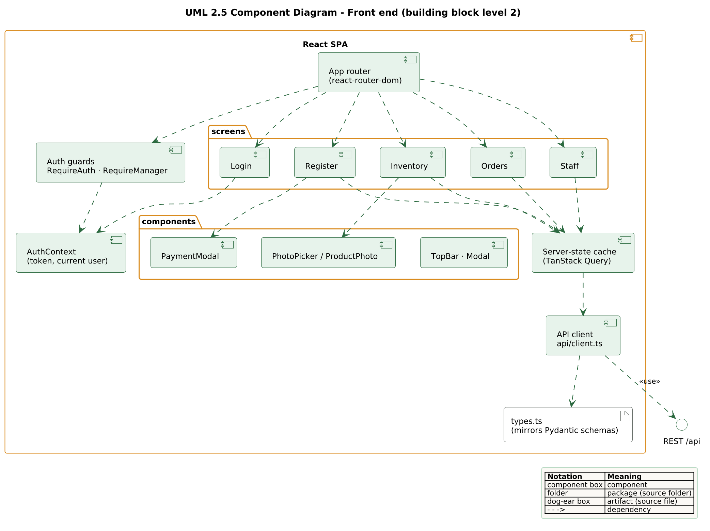
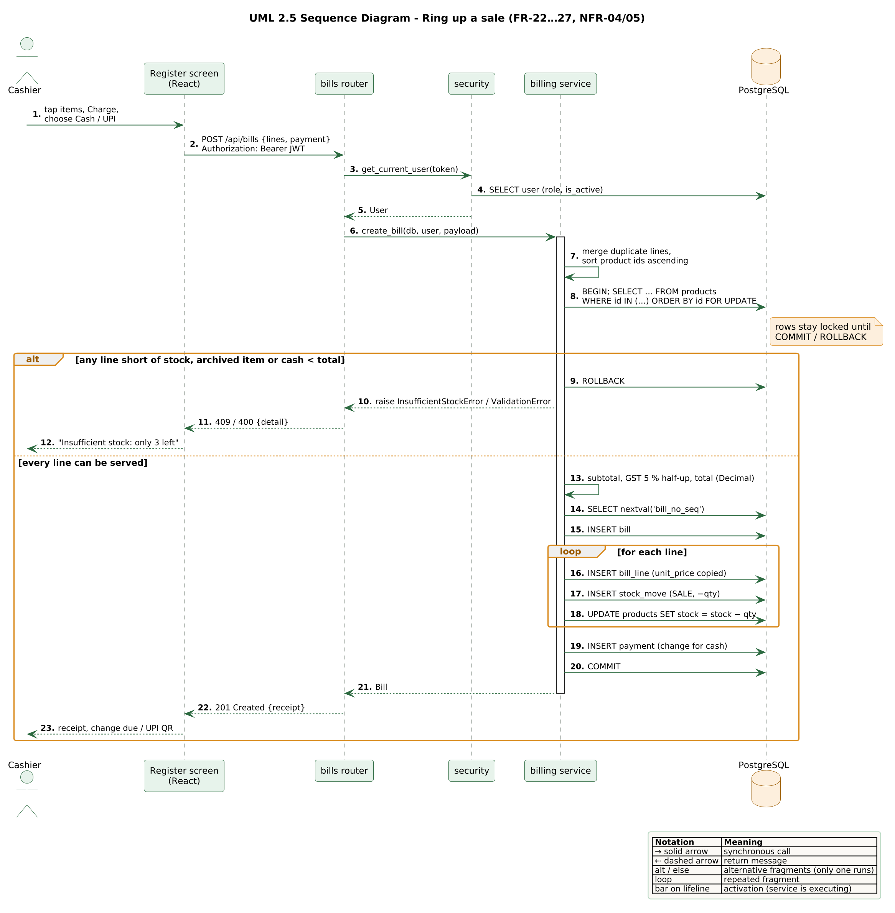
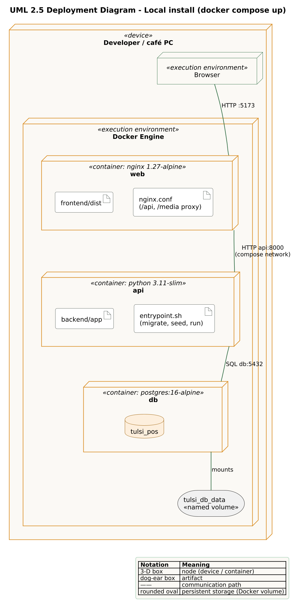
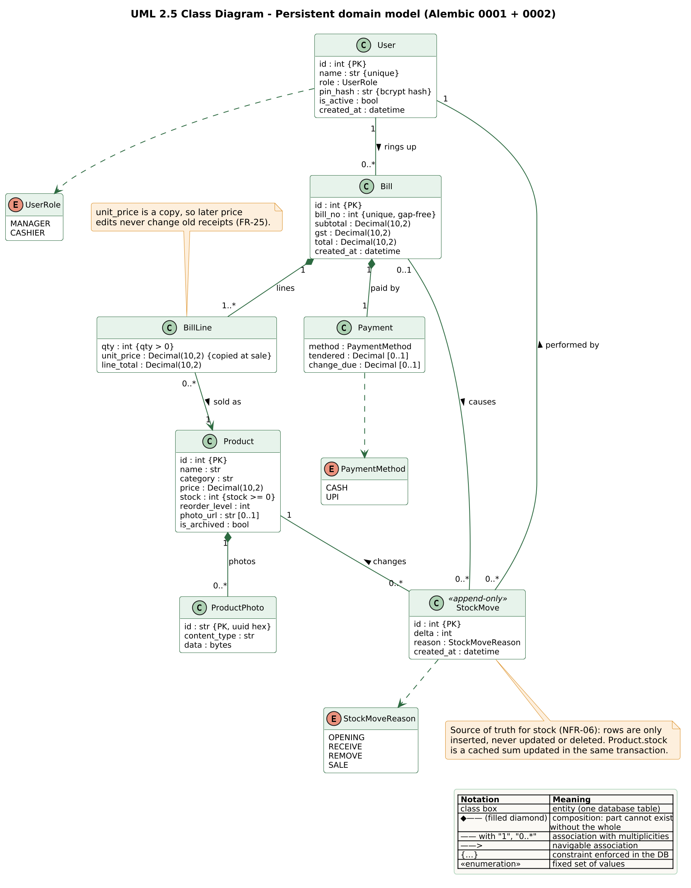

IU · Project: Software Engineering (CSEMCSPSE01) · Portfolio Part 3
Tulsi Tiffins POS
Software and System Architecture Documentation
Structure based on the arc42 template (Starke & Hruschka). Every diagram is drawn in UML 2.5, names its diagram type in its title and carries its own notation legend.
Author
Praveen Mysore Jagannath · 10251728
Tutor
Niknejad, Naghmeh
Document version
1.0.0 (matches software release v1.0.0)
Date
28 October 2026
Source code
github.com/mjpraveen04/tulsi-pos
Live application
https://tulsi-web.onrender.com
Diagram sources
docs/architecture/diagrams/*.puml (PlantUML), versioned with the code
Contents
1Introduction and quality goals
2Constraints
3System scope and context
4Solution strategy and technology decisions (why this stack, and not the alternatives)
5Building block view
6Runtime view
7Deployment view
8Data model
9Cross-cutting concepts
10Architecture decision records
11Quality and testing
12Risks and technical debt
AAppendix: REST API contract
Version history
The documentation is versioned together with the software: it lives in the repository under docs/architecture/, and every release tag freezes code, diagrams and this document together.
Version
Date
Change
0.1.0
3 Aug 2026
Phase 1 conception: requirements baseline (FR-01…30, NFR-01…18), use case and domain model, C4 context and container views.
Front end migrated to strict TypeScript; repository published on GitHub.
1.0.0
28 Oct 2026
Phase 3 final: all diagrams redrawn in named UML 2.5 notation with legends (tutor feedback); technology decisions compared against alternatives (tutor feedback); cloud deployment on Render + Neon; photos moved into PostgreSQL (migration 0002); bill-number gap fix; 120 tests.
How the Phase 2 feedback is addressed in this document
“Explain why this stack and not one of the alternatives” → Section 4: the selection criteria are derived from the requirements, and every technology is compared against two to four realistic alternatives with the deciding reason.
“Indicate the notation standard of each diagram, or include a legend” → every figure names its UML 2.5 diagram type in its title and caption UML 2.5 … and has an embedded legend explaining each symbol used.
1Introduction and quality goals
Tulsi Tiffins POS is a browser-based point-of-sale and inventory system for a small South Indian tiffin café. A cashier rings up an order on a tablet by tapping photo cards, takes cash or UPI and receives an exact receipt; a manager maintains the menu and its photos, receives stock, manages staff and reviews the day’s sales. The system replaces a paper bill book, a calculator and a hand-counted stock list.
This document describes the implemented architecture of release v1.0.0. Requirement identifiers (FR-xx, NFR-xx, TR-xx, BR-xx) are unchanged from the Phase 1 baseline so that every decision can be traced back to the requirement that motivated it.
1.1 Quality goals
The three quality goals below drive every architectural decision in this document, in this order of priority.
#
Quality goal
Scenario that must hold
Requirements
Q1
Correct stock and money
Two tills sell the last Masala Dosa at the same moment: exactly one sale succeeds, stock never goes below zero, a failed sale leaves no trace, and every ₹ amount is exact to the paisa.
FR-22…25, NFR-04/05/06, TR-01/04
Q2
Security of a shared till
A cashier on a shared tablet cannot reach manager functions even by calling the API directly; PINs are never stored readably; a deactivated user loses access immediately.
FR-04/06/07, NFR-07…11
Q3
Speed at the counter
A typical bill takes four taps or fewer on a tablet, with large touch targets and plain-language error messages.
NFR-12/13, FR-19…21
1.2 Stakeholders
Stakeholder
Expectation of the architecture
Cashier
A fast, obvious Register that never lets an item be sold twice and shows the change due.
Manager / owner
Trustworthy stock figures with an audit trail, correct daily totals, control over staff access.
Developer (solo)
A small, layered code base that one person can build, test and deploy within the course timeline.
Tutor / examiner
Traceability from requirements to code and tests, comprehensible diagrams, a running cloud instance.
2Constraints
Constraint
Consequence for the architecture
Must run in a web browser (IU brief)
Single-page web application; no native tablet app.
Docker Compose configuration required (IU brief)
Three containers (web, api, db) started by one command (NFR-14).
Cloud-hosted front end required (IU brief)
A free host that builds the same Dockerfiles; see Section 7.
One developer, fixed schedule, Waterfall plan
Mainstream, well-documented technologies; no microservices; a scope frozen with MoSCoW (BR-01).
Zero budget
Open-source stack, free hosting tiers, no paid payment gateway (UPI via static QR, FR-28).
Indian café context
₹ amounts, 5 % GST rounded half-up to two decimals, cash and UPI side by side.
3System scope and context
Figure 1 fixes the system boundary. Two human roles use the system; the Manager role is a specialisation of the Cashier role, so a manager can also ring up sales (FR-05). The customer’s UPI app is the only external party: it scans a static QR code generated by the system, and the cashier confirms receipt manually (FR-28). There is deliberately no automated link to a payment gateway, supplier or accounting system — these are the frozen Won’t-have items FR-F1…F4.
Neighbour
Interface
Exchanged information
Cashier, Manager
Web browser on a tablet, HTTPS
PIN login, orders, payments, menu, stock, staff and reports.
Customer’s UPI app
Printed / on-screen QR code (no network link)
upi://pay?pa=…&pn=…&am=… — payee, name and amount. Confirmation is manual.
Figure 1: System scope and actors UML 2.5 use case diagram
4Solution strategy and technology decisions
The Phase 2 slides listed the characteristics of each technology. This section answers the more important question: why this combination, and not one of the many alternatives? The method is the same for every concern: derive selection criteria from the requirements, list the realistic alternatives, rate each against the criteria, and record the deciding reason.
4.1 Selection criteria
ID
Criterion
Why it matters here
Source
K1
Transactional correctness
Lock a product row, check stock, write bill + lines + payment + moves, commit or roll back as one unit. This is quality goal Q1 and the top technical risk.
NFR-04/05, TR-01/02
K2
Exact decimal money
₹ amounts and 5 % GST must never pass through binary floating point.
TR-04, FR-21
K3
Validated, typed API contract
Every input validated on the server; the UI and the API must not drift apart.
NFR-10, NFR-15
K4
Delivery risk for one developer
Existing Python experience, quality of documentation, amount of glue code to write.
Legend for the comparison tables below:● fully meets the criterion · ◐ meets it with extra work or with a limitation · ○ does not meet it. The green row is the chosen option.
4.2 Backend framework
Option
K1
K2
K3
K4
K6
Deciding reason
FastAPI (Python)
●
●
●
●
●
Pydantic validates every request body and query (NFR-10) and generates the OpenAPI contract for free; Python’s decimal is built in; the framework adds no ORM of its own, so the transaction is controlled explicitly through SQLAlchemy.
Django + DRF
●
●
◐
◐
●
Strong and mature, but brings server-side templates, admin and session auth that a JSON API for an SPA does not need; DRF serialisers are a second validation layer to learn. More framework than the five screens justify.
Flask
●
●
○
◐
●
Minimal; validation, OpenAPI and dependency injection would all be hand-written glue — exactly the code that tends to hide security gaps.
Node.js (Express / NestJS)
●
◐
●
◐
●
JavaScript has no native decimal type (0.1 + 0.2 ≠ 0.3); every ₹ calculation would need a third-party decimal library and discipline to never touch Number.
Spring Boot (Java)
●
●
●
○
◐
Technically excellent (BigDecimal, JPA locking), but the heaviest set-up and memory footprint — a free 512 MB cloud instance is tight — and outside the developer’s experience.
4.3 Database
Option
K1
K2
K5
K6
Deciding reason
PostgreSQL
●
●
●
●
SELECT … FOR UPDATE row locks, CHECK (stock >= 0), exact NUMERIC(10,2), real sequences for bill numbers (FR-24) and transactional DDL, so a failed Alembic migration rolls back cleanly. Free managed hosting exists (Neon).
MySQL 8 / MariaDB
●
●
●
◐
A genuine alternative (InnoDB row locks, CHECK since 8.0.16). Rejected because DDL is not transactional — a half-applied migration must be repaired by hand — and fewer free managed offers without a time limit.
SQLite
○
◐
●
◐
No SELECT … FOR UPDATE; one lock for the whole file; no network access for several tills; NUMERIC is stored as float affinity. Cannot prove NFR-04 at all.
MongoDB
◐
◐
●
●
Bills, lines, products and moves are strongly relational; multi-document transactions and schema validation exist but are add-ons, and there is no declarative CHECK on a counter.
4.4 Data access and migrations
Option
Assessment
SQLAlchemy 2 + Alembic
Explicit session and transaction control — the billing service decides exactly where BEGIN, the locks and COMMIT happen; with_for_update() maps directly to the lock; Alembic gives versioned, reviewable migrations (NFR-17).
Raw SQL (psycopg2)
Full control, but every query, mapping and migration by hand; more code for one developer and easier to get wrong.
SQLModel / Tortoise ORM
SQLModel is a thin layer over SQLAlchemy with less documentation for locking; Tortoise is async-only and less mature. No benefit over the underlying library.
4.5 Front end
Option
K3
K4
Deciding reason
React 18 + TypeScript (strict) + Vite
●
●
The Register is a rich client: a live basket, quantity steppers, a payment modal and stock badges that refresh after each sale. React’s component model maps one-to-one onto the prototype’s cards; strict TypeScript with types.ts mirroring the Pydantic schemas turns API drift into a build error; TanStack Query refetches stock after a sale.
Vue 3 + TypeScript
●
●
Would also have met every requirement. React was chosen for its larger ecosystem (TanStack Query, React Router) and because the prototype was already structured as React-style components.
Angular
●
○
Complete framework with modules, DI and RxJS — a steep learning curve and a large bundle for five screens.
Server-rendered (Jinja / HTMX)
○
●
Simplest to deploy, but the front end would no longer be independently deployable (NFR-15), and the basket state would require a round trip on every tap.
Stateless, so no session store; bearer header avoids CSRF; one token per shift (NFR-08). An external identity provider would need e-mail accounts for counter staff who sign in with a 4-digit PIN on a shared tablet.
Revocation
Role and is_active re-read from the DB on every request
Trust the role claim inside the token
A deactivated user or a changed role takes effect at once, not after 8 hours (FR-11, NFR-11).
PIN storage
bcrypt via passlib
argon2; SHA-256; plaintext
bcrypt is salted and deliberately slow, which matters with only 10,000 possible PINs; argon2 would be equally valid but adds a native dependency. Fast hashes are trivially brute-forced (FR-07, NFR-09).
UPI payment
Static QR with qrcode + Pillow
Payment gateway (Razorpay, PhonePe) with webhooks
A gateway needs a merchant account, fees and a public webhook endpoint — out of scope (FR-F1). A static QR works offline and costs nothing.
4.7 Quality assurance, delivery and hosting
Concern
Chosen
Alternatives rejected
Deciding reason
Tests
pytest against a real PostgreSQL
SQLite in memory; mocked repositories
The two release gates (concurrency, rollback) depend on real row locks and a real CHECK constraint. A faster fake database would pass tests that prove nothing.
Packaging
Docker Compose (3 containers)
Manual install script; Kubernetes
One command on any machine (NFR-14) and required by the IU brief; Kubernetes is operational overhead without benefit for one café.
Web server
nginx (local) / Render static site (cloud)
Serve the SPA from FastAPI
Keeps the front end independently deployable (NFR-15) and gives one origin, so no CORS is needed in production.
Cloud host
Render (Docker + static) with Neon PostgreSQL
Vercel; Render PostgreSQL; AWS / GCP VM
Render builds the existing Dockerfiles unchanged. Vercel would need the API rewritten as serverless functions. Render’s free PostgreSQL is deleted after 30 days — shorter than the grading period — whereas Neon’s free tier does not expire. A VM needs a credit card and manual patching.
Summary of the strategy
The stack is chosen around one hard problem: a sale must be atomic and must never oversell. PostgreSQL provides the guarantees (locks, CHECK, NUMERIC, sequences), SQLAlchemy makes the transaction explicit, FastAPI and Pydantic keep the boundary validated and typed, and a strictly typed React client keeps the contract honest at build time. Everything else — Docker, Render, Neon — is chosen to deploy exactly that, for free, with one command.
5Building block view
5.1 Level 1 – the whole system
The system consists of three building blocks. The browser loads the SPA, which reaches the API only through two interfaces: the JSON REST API under /api and the photo endpoint under /media. Only the API talks to the database. In both deployments a proxy (nginx locally, Render rewrite rules in the cloud) serves SPA and API under one origin.
The API is strictly layered (NFR-16). Routers are thin HTTP adapters; services own every business rule and are the only code that opens transactions; models are only the mapping to tables. Services never import FastAPI — they raise domain errors that app.main translates into HTTP status codes and readable messages (NFR-13). The rule “no ORM query in any router” is checked in review; routers import model classes only as type hints.
The router wraps manager-only screens in a RequireManager guard — a convenience for the user, not a security boundary, because the API enforces every role on the server (NFR-11). All server data flows through TanStack Query and a single API client that attaches the JWT and turns error responses into readable messages. types.ts mirrors the Pydantic schemas, so a changed field breaks the build rather than a receipt.

Figure 4: Front-end building blocks UML 2.5 component diagram
6Runtime view
6.1 Ringing up a sale (the critical scenario)
The sale is the one scenario where a design error would cost the café money, so it is implemented exactly once, in services/billing.py. Figure 5 shows its message sequence. Three details make it safe:
Lock before read, in a fixed order. All product rows of the basket are locked with SELECT … FOR UPDATE in ascending id order. Two tills selling the last dosa queue on the same row lock; the second sees stock 0 and is rejected. Because every transaction locks in the same order, two overlapping baskets cannot deadlock.
Check everything before writing anything. Stock for every line, archived items and short cash are all checked before the first INSERT — and before the bill number is taken, because a PostgreSQL sequence is not rolled back. (This last point was a defect found in Phase 3: short cash used to consume a bill number; it is now fixed and covered by a regression test.)
One commit. Bill, lines with copied unit price, payment, one SALE stock move per line and the stock decrement are committed together; any exception rolls back all of it. The CHECK constraint remains as a backstop and is mapped to 409, never 500.

Figure 5: Ring up a sale UML 2.5 sequence diagram
6.2 Other scenarios
Scenario
Behaviour
Log in
The login screen lists active staff names (GET /api/users/pin-targets); the user taps a name and enters a 4-digit PIN; the server verifies it with bcrypt and returns a JWT valid for one 8-hour shift. A wrong PIN returns 401 without saying which part was wrong.
Receive stock
The manager taps “+” on an item; the API inserts a RECEIVE move with a positive amount and updates the cached stock in the same transaction. The sign comes from the reason, so a negative “receive” cannot exist.
Change a price
Only the product row changes. Old bills are unaffected because each bill line holds its own copy of the unit price (FR-25).
Deactivate staff
The flag is set; the user’s next request fails with 401 because the role is re-read on every request. Deactivating the last active manager is refused.
7Deployment view
The same container images run in two environments. The local installation is the reference required by the brief (docker compose up); the cloud deployment makes the front end directly accessible for evaluation. The application code is identical in both — only configuration differs, and all of it comes from environment variables.
Infrastructure as code:render.yaml (a Render Blueprint) defines both services; Render redeploys automatically on every push to main.
Start-up: the API container runs alembic upgrade head, then the idempotent seed, then uvicorn on the port Render assigns.
Database: Neon runs PostgreSQL 18; the local stack runs 16. The full test suite was run against both versions with the same result (120 passed).
Free-tier behaviour: the API sleeps after 15 minutes without traffic; the first request then takes about 30–60 s. Render’s disk is ephemeral, which is why product photos were moved from a file volume into PostgreSQL (migration 0002).
7.2 Local – Docker Compose

Figure 7: Local installation UML 2.5 deployment diagram
8Data model
Figure 8 shows the persistent domain model as implemented by Alembic migrations 0001 and 0002. Each class is one table; constraints in braces are enforced by the database itself, not only by application code.

Figure 8: Persistent domain model UML 2.5 class diagram
Invariant
How it is guaranteed
Requirement
Stock never negative
Row lock + check in the billing service; CHECK (stock >= 0) in the database.
NFR-04
Ledger is the truth
Stock changes only by inserting a StockMove; moves are never updated or deleted; products.stock is a mirror updated in the same transaction; a test reconciles the sum of moves with stock.
NFR-06
Receipts never change
bill_lines.unit_price is copied at sale; products are archived, never deleted.
FR-14/25
Unique, gap-free bill numbers
PostgreSQL sequence bill_no_seq (starting at 1042), taken only after every check has passed; unique index.
Bills reference the cashier; every move references the acting user, the bill (for sales) and a timestamp.
NFR-18
9Cross-cutting concepts
Concept
Implementation
Authentication
4-digit PIN verified against a bcrypt hash; there is no plaintext PIN column. Signed HS256 JWT, 8 h lifetime; the secret is generated by the host and never committed.
Authorisation
FastAPI dependencies get_current_user / require_manager on every protected route; the user and role are reloaded from the database per request. Missing or invalid token → 401, wrong role → 403.
Public endpoints
Deliberately public: POST /api/auth/login, GET /api/users/pin-targets (names and roles of active staff for the login screen — never PINs), GET /api/health (host health check) and GET /media/products/{name} (photos, because an <img> tag cannot send a bearer token; names are random 128-bit UUIDs). All other routes require a token — 27 automated RBAC tests check this.
Input validation
Every body and query goes through a Pydantic model (NFR-10): positive quantities, 4-digit PINs, cash must carry a tendered amount, UPI must not.
File uploads
Content type and filename are ignored; the bytes must decode as PNG, JPEG or WebP; the image is re-encoded from pixels (removing EXIF and polyglot payloads), scaled to 900 px and stored under a generated UUID. SVG is refused.
Error handling
Services raise domain errors (NotFoundError, ValidationError, ConflictError, InsufficientStockError); one handler maps them to HTTP codes with sentences such as “Insufficient stock: only 3 left” (NFR-13).
Money
All arithmetic in services/money.py with Decimal and ROUND_HALF_UP; a release-gate test asserts that no float ever reaches a money column.
Configuration
Twelve-factor style: database URL, JWT secret and lifetime, UPI ID, GST rate and seeding all come from environment variables (.env.example, render.yaml).
Schema evolution
Alembic migrations only; the app never creates tables itself (NFR-17). Migrations run automatically on container start.
Test data
An idempotent seed creates a realistic café: 12 menu items in 4 categories with prices and stock, and 3 staff accounts — no dummy text.
10Architecture decision records
The technology choices are covered in Section 4. The following design decisions within that stack each had a realistic alternative; they are recorded in short ADR form (context → decision → consequence).
ADR
Decision
Alternative rejected
Rationale and consequence
01
Pessimistic row locks during the sale
Optimistic locking with a version column
Optimistic locking would make a busy counter retry sales at checkout; a short lock is invisible to the user. Consequence: sales of the same item are serialised (milliseconds).
02
Lock rows in ascending product id order
Lock in basket order
Two baskets with overlapping items in opposite order could deadlock. Fixed ordering removes the possibility.
03
Append-only ledger + cached stock column
Compute stock as SUM(delta) on every read
Full audit trail and a fast menu query; the cost is keeping the mirror in step, which is done in the same transaction and reconciled by a test.
04
Validate everything, then take the bill number
Take the number first
Sequences ignore rollback, so taking the number first leaves gaps in an audited series. Phase 3 fix extended this to short cash.
05
Decimal end to end
Float maths, round for display
₹0.05 cannot be represented exactly in binary floating point; rounding errors would accumulate across a day.
06
Copy unit price onto each bill line
Join bill lines to the current price
Receipts are historical records; a price change must not rewrite them (FR-25).
07
Archive products, never delete
Hard delete with cascade
Old bills keep their items; the menu stays clean (FR-14).
08
Re-read role from DB per request
Trust the token’s role claim
Deactivation is immediate. Cost: one indexed query per request.
09
Domain errors in services, HTTP mapping in one place
Raise HTTPException in services
Services stay independent of the web framework and testable directly; messages are consistent.
10
Store photos in PostgreSQL (Phase 3)
File volume; object storage (S3, Vercel Blob)
The free cloud host wipes its disk on restart; object storage would add a third service and credentials. A photo now commits in the same transaction as the product’s photo_url. Cost: about 50–150 KB per photo in the database, acceptable for a menu of tens of items.
11
Tests on a real PostgreSQL
SQLite in memory
Only a real database proves the locks and the CHECK constraint. Cost: the suite needs Docker and takes about 110 s.
12
Diagrams as PlantUML source in the repository (Phase 3)
Drawings in a slide tool
Diagrams are versioned and reviewed with the code, use standard UML notation, and can be regenerated for each release.
11Quality and testing
Each work package was tested as soon as it was complete. The automated suite runs against a migrated PostgreSQL database; the six tests marked gate are release gates — a release is not tagged unless they pass.
Release gates: two and ten concurrent bills for the same item, mid-transaction failure, whole-basket rollback, no bill number consumed by a rejected sale, no float in money (NFR-04/05)
test_payments.py
9
Cash change (TC-04), short cash rejected without a gap, UPI and QR (TC-07) (FR-26…28)
test_orders.py
11
History by date and number, receipts, daily totals (FR-29/30)
test_photos.py
16
Upload, serving, replacement, deletion, and rejection of scripts, SVG, oversized and empty files
Total
120
All passed on 28 Oct 2026 (PostgreSQL 16, ≈ 112 s; also PostgreSQL 18). Gates: 6 passed in 3.9 s. Front end: tsc strict with 0 errors.
Live verification on the cloud instance (28 Oct 2026)
After deployment, a scripted smoke test ran against https://tulsi-web.onrender.com: no token → 401; wrong PIN → 401; cashier on a manager route → 403; menu with 12 items; cash sale 2 × Filter Coffee with ₹500 tendered → bill 1042, ₹80.00 + ₹4.00 GST = ₹84.00, change ₹416.00; UPI sale → bill 1043; an oversized order → 409 “Insufficient stock: only 57 left” with nothing written; photo upload, serve and delete; daily total ₹126.00 from 2 bills.
12Risks and technical debt
The IU brief requires non-functional requirements that could not be met within the project to be listed as technical debt. They are recorded here honestly, with their impact and the planned remedy.
ID
Technical debt
Affects
Impact and remedy
TD-01
No automated load test
NFR-01, 02, 03
The 2 s / 1,000-product, 1 s confirmation and 10-till targets are designed for (indexed queries, short locks) but not measured. Remedy: a Locust script with a 1,000-product seed.
TD-02
No front-end unit tests
Maintainability
UI logic is covered by strict typing and manual test cases TC-01…08 only. Remedy: Vitest + React Testing Library for the basket and payment modal.
TD-03
No lock-out after repeated wrong PINs
NFR-09 spirit
A 4-digit PIN has only 10,000 values; bcrypt slows guessing but does not stop it. Remedy: rate limit or temporary lock after 5 failures.
TD-04
UPI payment confirmed manually
FR-28 (by design)
The cashier must check the customer’s phone. Remedy (future, FR-F1): gateway with webhook confirmation.
TD-05
Free-tier cold start
NFR-02 on first request
The first request after 15 idle minutes takes 30–60 s. Remedy: a paid always-on instance for real café use.
TD-06
Token revocation only via deactivation
NFR-08
Logout removes the token in the browser; a stolen token stays valid until expiry unless the user is deactivated. Remedy: a short-lived token with a refresh token, or a deny list.
TD-07
Staff names visible on the login screen
Privacy
Accepted trade-off for tap-to-select login on a shared till. Remedy if needed: a device-pairing code before the name list is shown.
TD-08
PostgreSQL version differs between local (16) and cloud (18)
NFR-14
The suite passes on both; a future breaking change could appear on only one. Remedy: pin both to the same major version.
Remaining risks
ID
Risk (Phase 1 register)
Status at v1.0.0
TR-01
Race condition sells the same dish twice
Closed — row locks, CHECK, two concurrency gates.
TR-02
Partial writes from unfamiliar transaction semantics
Closed — single transaction, fault-injection gate.
TR-03
Prototype does not translate into React
Closed — five screens rebuilt as components.
TR-04
₹ / GST rounding errors
Closed — Decimal, TC-02 asserted to the paisa.
TR-05
Environment differs on another machine
Mitigated — same images locally and in the cloud; TD-08 remains.
BR-03
Solo timeline slips
Occurred — planned end 25 Sep 2026, actual end of October; see lessons learned in the abstract.
AAppendix: REST API contract
24 routes. The complete, generated OpenAPI description is served by the running API at /docs. Role: public = no token; any = Cashier or Manager; manager = Manager only.
Method
Path
Role
Purpose
Req.
POST
/api/auth/login
public
PIN login → JWT
FR-01/02
GET
/api/users/pin-targets
public
Active staff names for the login screen
FR-01
GET
/api/auth/me
any
Current user
FR-03
POST
/api/auth/logout
any
End session
FR-08
GET · POST
/api/users
manager
List / add staff
FR-09
PATCH
/api/users/{id}
manager
Edit staff, reset PIN
FR-10
PATCH
/api/users/{id}/deactivate
manager
Deactivate staff
FR-11
GET
/api/products
any
Products, search and category filter
FR-16
POST
/api/products
manager
Create product with opening stock
FR-12
PATCH
/api/products/{id}
manager
Edit product
FR-13
PATCH
/api/products/{id}/archive
manager
Archive / restore
FR-14
POST · DELETE
/api/products/{id}/photo
manager
Upload / remove photo
FR-13
POST
/api/products/{id}/stock
manager
Receive / remove stock (ledger)
FR-15
GET
/api/products/stock-moves
manager
Stock ledger
NFR-06/18
GET
/api/register/menu
any
Active products by category with stock badges
FR-17/19
GET
/api/register/upi-qr
any
Static UPI QR for an amount
FR-28
POST
/api/bills
any
The atomic sale → 201 receipt / 409 / 400
FR-22…27
GET
/api/bills
any
History by date or bill number
FR-29
GET
/api/bills/{bill_no}
any
Receipt
FR-29
GET
/api/reports/daily-total
manager
Daily sales total
FR-30
GET
/media/products/{name}
public
Product photo
FR-13
GET
/api/health
public
Health check for the host
NFR-14
References
Starke, G., & Hruschka, P. (n.d.). arc42 – Template for documentation of software and system architecture. https://arc42.org/ · Object Management Group. (2017). Unified Modeling Language (UML), Version 2.5.1. https://www.omg.org/spec/UML/2.5.1 · PlantUML. (n.d.). https://plantuml.com/ · PostgreSQL Global Development Group. (n.d.). Explicit locking. https://www.postgresql.org/docs/16/explicit-locking.html · Render. (n.d.). Blueprint specification. https://render.com/docs/blueprint-spec · Neon. (n.d.). https://neon.tech/docs · Royce, W. W. (1970). Managing the development of large software systems. Proceedings of IEEE WESCON, 1–9. Further library references as in the Phase 2 presentation.